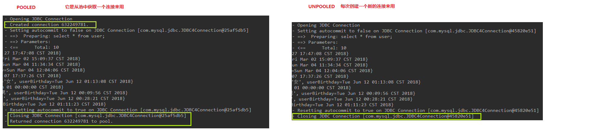
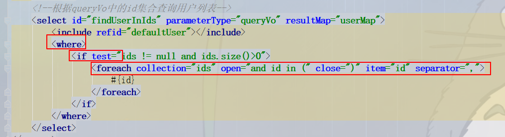

mybatis的连接池
连接池定义
连接池就是用于存储连接的一个容器
容器其实就是一个集合对象，该集合必须是线程安全的，不能两个线程拿到同一连接
该集合还必须实现队列的特性：先进先出
mybatis连接池
mybatis连接池提供了三种方式的配置：
配置位置：
主配置文件SqlMapConfig.xml中的dataSource标签，type属性就是表示采用何种连接池方式
type属性的取值：
POOlLED 采用传统的javax.sql.DataSource规范中的连接池，mybatis中有针对规范的实现
UNPOOLED 采用传统的获取连接的方式，虽然也实现了javax.sql.DataSource接口，但是并没有使用池的思想
JNDI 采用服务器提供的JNDI技术实现，来获取DataSource对象，不同的服务器所能拿到的DataSource是不一样的
注意：如果不是web或者maven的war工程，是不能使用的
我们实际开发中使用的是Tomcat服务器，采用的连接池就是dbcp连接池

mybatis的事务控制及设计的方法
什么是事务？
事务的四大特性ACID
不考虑隔离性会产生的3个问题
解决办法：
mybatis基于XML配置的动态SQL语句使用
mappers配置文件中的几个标签：
<if>条件语句
<where>自动添加"1 = 1"
<foreach>传入条件参数为集合时，遍历该集合

sql语句中“1=1”的作用：
1.方便编写条件语句
2.防止报错
副作用：
添加了“1=1”的过滤条件以后数据库系统就无法使用索引等查询优化策略，数据库系统将会被迫对每行数据进行扫描（也就是全表扫描）以比较此行是否满足过滤条件，当表中数据量比较大的时候查询速度会非常慢
mybatis的多表查询
表之间的关系有多种：
一对多
多对一
一对一
多对多
Mybatis将多对一看成一对一
mybatis多表查询一对一（一对多）示例
用户和账户：
一个用户可以有多个账户
一个账户只能属于一个用户（多个账户也可以属于一个用户）
步骤：
1.建立两张表：用户表、账户表
让用户表和账户表之间具备一对多的关系：需要使用外键在账户表中添加
2.建立两个实体类：用户实体类和账户实体类
让用户和账户的实体类能体现出来一对多的关系
3.建立两个配置文件
用户的配置文件
账户的配置文件
4.实现配置：
当我们查询用户时，可以同时得到用户下所包含的账户信息
当我们查询账户时，可以同时得到账户的所属用户信息
一对一实现的两种方式
1.继承主表实体类，将从表的信息加入

2.将从表实体类作为主表实体类的域，使用resultMap将结果插入

一对多实现的方式
将从表实体类列表作为主表实体类的域，使用resultMap将结果插入

mybatis多表查询多对多示例
用户和角色：
一个用户可以有多个角色
一个角色可以赋予多个用户
步骤：
1.建立两张表：用户表、角色表
让用户表和角色表具有多对多的关系。需要使用中间表，中间表中包含各种各自的主键，在中间表中是外键。
2.建立两个实体类：用户实体类和角色实体类
让用户和角色的实体类能体现出来多对多的关系
各自包含对方一个集合引用
3.建立两个配置文件
用户的配置文件
角色的配置文件
4.实现配置
当我们查询用户时，可以同时得到用户所包含的角色信息
当我们查询角色时，可以同时得到角色所赋予的用户信息
多对多的解决：
利用中间表，将多对多转换为两个一对多
sql语句变化，代码部分与一对多类似
JNDI

步骤：
1.1创建maven的war工程


1.2导入pom坐标
<dependencies>
<dependency>
<groupId>org.mybatis</groupId>
<artifactId>mybatis</artifactId>
<version>3.5.1</version>
</dependency>
<dependency>
<groupId>mysql</groupId>
<artifactId>mysql-connector-java</artifactId>
<version>5.1.47</version>
</dependency>
<dependency>
<groupId>log4j</groupId>
<artifactId>log4j</artifactId>
<version>1.2.17</version>
</dependency>
<dependency>
<groupId>junit</groupId>
<artifactId>junit</artifactId>
<version>4.13-beta-2</version>
</dependency>
<dependency>
<groupId>javax.servlet</groupId>
<artifactId>servlet-api</artifactId>
<version>2.5</version>
</dependency>
<dependency>
<groupId>javax.servlet.jsp</groupId>
<artifactId>jsp-api</artifactId>
<version>2.2</version>
</dependency>
</dependencies>
1.3在webapp文件夹下创建WETA-INF目录，添加数据源配置

<?xml version="1.0" encoding="UTF-8"?>
<Context>
<!--
<Resource name="jdbc/eesy_mybatis" 数据源的名称type="javax.sql.DataSource" 数据源类型auth="Container" 数据源提供者maxActive="20" 最大活动数maxWait="10000" 最大等待时间maxIdle="5" 最大空闲数username="root" 用户名password="1234" 密码driverClassName="com.mysql.jdbc.Driver" 驱动类url="jdbc:mysql://localhost:3306/eesy_mybatis" 连接url字符串/>
-->
<Resource name="jdbc/db1"
type="javax.sql.DataSource"
auth="Container"
maxActive="20"
maxWait="10000"
maxIdle="5"
username="root"
password="1234"
driverClassName="com.mysql.jdbc.Driver"
url="jdbc:mysql://localhost:3306/db1"
/>
</Context>
1.6修改SqlMapConfig.xml配置

1.7使用JNDI连接数据库

注意：
连接数据库的部分得写在jsp中，此处test中代码是无效的，因为test运行未经过tomcat